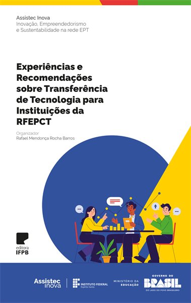
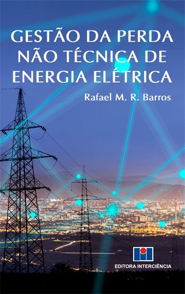
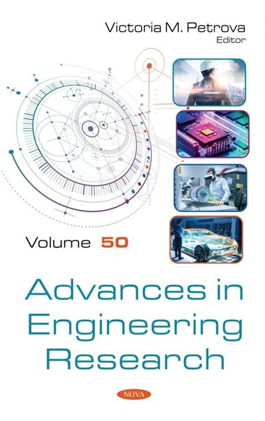
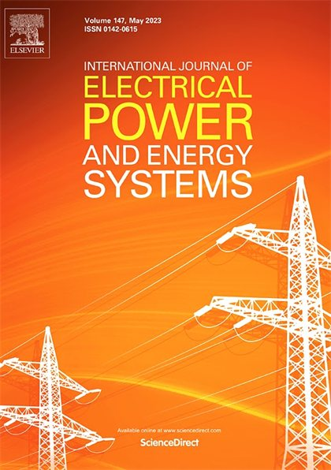
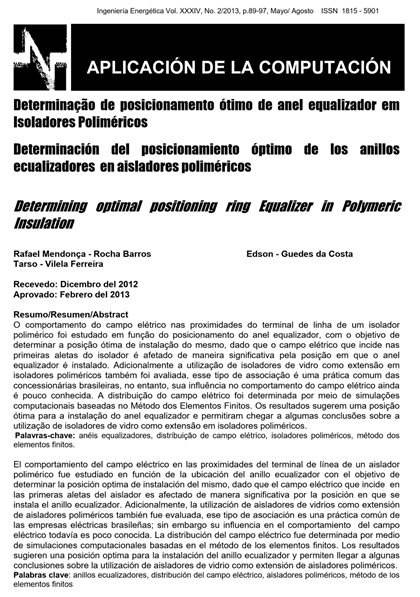

PublicaçõesPublicationsPublicaciones
Livros e capítulosBooks and chaptersLibros y capítulos 3

Experiências e Recomendações sobre Transferência de Tecnologia para Instituições da RFEPCT
ResumoAbstractResumen
O livro tem como objetivo central sistematizar experiências práticas que demonstram como ativos tecnológicos podem ser transformados em inovação, desenvolvimento e impacto socioeconômico. Mais do que apresentar conceitos ou procedimentos metodológicos, a obra direciona-se à prática da transferência de tecnologia no âmbito da Educação Profissional e Tecnológica brasileira, consolidando experiências e boas práticas relacionadas à transferência de ativos tecnológicos para o setor produtivo. O livro serve como referência para gestores de Núcleos de Inovação Tecnológica (NITs), pesquisadores e demais profissionais envolvidos na gestão da inovação, que buscam mais segurança jurídica, eficiência operacional e efetividade em processos de negociação e transferência.Resumo no idioma original da publicação (português).Abstract in the original language of the publication (Portuguese).Resumen en el idioma original de la publicación (portugués).
Gestão da Perda Não Técnica de Energia Elétrica
ResumoAbstractResumen
A obra é uma contribuição para os profissionais do setor elétrico que trabalham direta ou indiretamente com a gestão da perda não técnica de energia, bem como para todos os estudiosos do tema, que buscam compreender as várias particularidades que permeiam o problema dos pontos de vista técnico, econômico, social e regulatório. O livro oferece informações detalhadas sobre a perda não técnica de energia no mundo e no Brasil, em particular, apresenta uma fundamentação teórica para o tema e discute os principais impactos técnicos e econômicos para o sistema elétrico. São apresentados, ainda, os indicadores de perda não técnica em vários sistemas elétricos ao redor do mundo, além de uma discussão sobre a experiência internacional de diferentes concessionárias de energia na gestão do problema, indicando as soluções adotadas e os resultados obtidos em cada caso. Ademais, o autor também propõe uma nova abordagem para o problema, com base nas mais recentes técnicas de Advanced Analytics e na crescente disponibilidade de dados por parte das concessionárias de energia. A metodologia proposta pode ser utilizada por distribuidoras de energia elétrica para melhorar suas estratégias de gestão da perda não técnica de energia, propiciando um aumento de receita e a redução dos seus custos operacionais. As contribuições oferecidas neste livro são resultado da experiência acumulada pelo autor durante vários anos de atuação como engenheiro no setor de distribuição de energia elétrica, bem como, durante o desenvolvimento de sua tese de doutorado, a qual teve como tema central a gestão da perda não técnica de energia.Resumo no idioma original da publicação (português).Abstract in the original language of the publication (Portuguese).Resumen en el idioma original de la publicación (portugués).
CapítuloChapterCapítulo · Power Transformers Windings Submitted to Inrush Currents: The Possibility of Mechanical Failure
ResumoAbstractResumen
This work presents a study regarding the contribution of inrush current to the occurrence of mechanical fatigue in windings of a power transformer and, consequently, the impact of that phenomenon on the equipment’s lifetime. In order to perform the study, electromagnetic transient simulations were used to determine the inrush current in a three-phase transformer model. Then, 3D simulations, based on the Finite Element Method, were performed to determine the electromechanical stresses in the equipment windings, under the effect of the inrush current. Next, the methods of Critical Plans and Palmgren-Miner were applied to perform the fatigue study. From the results, the impact of inrush current on the integrity of the transformer’s windings was determined, as well as, to estimate the reduction of lifespan of the equipment due to inrush occurrence. The number of inrushes needed for total reduction of lifespan of the equipment due to mechanical fatigue was also determined. The results can be used in transformers design stage, with the purpose of assisting the evaluation of mechanical withstand of an equipment, which can minimize the possibility of failure and increase its lifespan.Resumo no idioma original da publicação (inglês).Abstract in the original language of the publication (English).Resumen en el idioma original de la publicación (inglés).
Revistas científicasScientific journalsRevistas científicas 9
Causal inference-inspired analysis applied to non-technical loss characterization in distribution power systems
ResumoAbstractResumen
This study addresses that gap by proposing an association-based, causal-inference-inspired analytical framework that prioritizes interpretability rather than predictive accuracy. The proposed approach uses Hill’s criteria for causation as a conceptual guide, together with odds ratios for categorical variables and reliable mean differences for numerical variables, to characterize variables already available to utilities. Importantly, the method does not claim verified causal effects; instead, it identifies statistically significant associations that may support operational decision-making. Using data from 261,489 customers and 174 variables, the framework identified 76 variables significantly associated with non-technical loss occurrence. Spearman’s rank correlation analysis was then used to assess the explanatory power of these variables, yielding 26.36% explain variance. The main novelty of this work lies in replacing the conventional black-box predictive paradigm with a transparent analytical strategy that not only identifies relevant variables but also quantifies the direction and strength of their association, distinguishing risk and protective factors. These results provide utilities with actionable evidence to prioritize monitoring, inspections, and asset-related interventions.Resumo no idioma original da publicação (inglês).Abstract in the original language of the publication (English).Resumen en el idioma original de la publicación (inglés).DesagregaGD: uma ferramenta computacional para desagregação da curva de carga em redes com geração distribuída
ResumoAbstractResumen
No trabalho foi desenvolvido e validado uma ferramenta computacional, denominada DesagregaGD, para estimar a curva de carga real e quantificar o mascaramento. A metodologia baseou-se na geração de dados controlados por meio de simulações de fluxo de potência no software OpenDSS, modelando sistemas-teste do IEEE com e sem geração fotovoltaica. A partir desses dados, a ferramenta foi desenvolvida em JavaScript, aplicando a operação matemática fundamental: Carga Real = Carga Mascarada + Geração Distribuída. A validação foi estruturada em duas etapas para testar a robustez do método. Primeiramente, em sistemas-teste ideais, a ferramenta alcançou um Coeficiente de Determinação (R²) de 0,9958 e um erro médio percentual de 1,5%. Em seguida, a validação foi estendida a um estudo de caso complexo, utilizando um modelo de alimentador real da Neoenergia com alta penetração de GD. Mesmo neste cenário, a aplicação manteve a alta precisão, atingindo um R² de 0,9929 e um erro médio percentual de 0,74%, confirmando sua eficácia em condições práticas. Como principal contribuição, o estudo entrega a aplicação web DesagregaGD, de código aberto, gratuita e com registro de software, oferecendo uma solução validada para o planejamento, a operação e o monitoramento de redes com alta presença de GD, contribuindo para uma gestão mais segura e eficiente do sistema elétrico.Resumo no idioma original da publicação (português).Abstract in the original language of the publication (Portuguese).Resumen en el idioma original de la publicación (portugués).Characterization of Non-Technical Loss in Consumers of the Electric Distribution System
ResumoAbstractResumen
This paper presents the results of an exploratory analysis performed on a set of consumer characteristics of the electric distribution system. The main objective was to identify the most important attributes for recognizing consumers associated with non-technical losses. To achieve this, a hybrid approach was employed, combining heuristic analysis with statistical techniques, including correlation coefficients, mutual information, and scatter plots. As a result of the study, it was possible to reduce the initial set of 385 attributes to just 20, which were also ranked in order of importance. The selected attributes contain relevant information for classifying consumers and will later be used as input in a predictive model. The findings of this paper can help energy companies in understanding which consumer information should be monitored to detect non-technical losses.Resumo no idioma original da publicação (inglês).Abstract in the original language of the publication (English).Resumen en el idioma original de la publicación (inglés).Micro-Foundations Of Open Innovation Contributing To Dynamic Capabilities: A Case Study At Eletrobras Chesf
ResumoAbstractResumen
This study aimed to understand how companies can develop dynamic capabilities (DC) through underlying processes such as open innovation (OI). Adopting a micro-foundation perspective, we examine the role of Eletrobras Chesf in shaping the UmBUH Hub over the past two years. A single case study that focused on the pioneering AI project developed by the Innovation Directorate of Eletrobrás Chesf, the UmBUH innovation hub, which resulted in the incorporation of new CD. The analyses reveal that the company can exploit external, market-based technological knowledge resources during OI activities, as shown by the developed process model reflecting these findings. The identification of three underlying mechanisms of OI, according to Teece (2007) - sensing, seizing, and reconfiguring - establishes a link between the OI process and a company's DC. These mechanisms sequentially and reciprocally alter the company's abilities to detect and seize opportunities. This logic explains how the Hub assists the focal company in external search and the subsequent appropriation of knowledge. This process can rectify the misalignment between current capabilities and future market opportunities, thereby improving the company's DC.Resumo no idioma original da publicação (inglês).Abstract in the original language of the publication (English).Resumen en el idioma original de la publicación (inglés).Maximizing the Financial Return of Non-Technical Loss Management in Power Distribution Systems
ResumoAbstractResumen
Despite many studies have been published on non-technical loss management, there is a lack of solutions focused in the financial return of utilities actions. This paper aims to contribute to fill up this gap, presenting a new approach that maximizes the financial return of utilities when selecting consumers for field inspections. The predicted return of an inspection is calculated considering its operational cost versus the potential of energy recovery and the tariff value. The potential of energy recovery, in turn, is calculated considering the probability of non-technical loss existence and the forecast of unmeasured energy. The Rotation Forest algorithm is utilized to indicate the non-technical loss existence, while the eXtreme Gradient Boosting algorithm is utilized for energy recovery forecast. The proposed approach was applied in a real database of 261,489 consumers from a Brazilian utility. Then, 338 new field inspections were performed on unlabeled consumers in order to corroborate results in a real application. Achieved results showed an increase of up to 11.5 times in the financial return of field inspections when applying the proposed approach. Results could also be used to determine the optimal number of inspections in the utility, for which the financial return is maximum.Resumo no idioma original da publicação (inglês).Abstract in the original language of the publication (English).Resumen en el idioma original de la publicación (inglés).
Evaluation of classifiers for non-technical loss identification in electric power systems
ResumoAbstractResumen
Recent works have proposed different machine learning classifiers for non-technical loss identification. However, it is still not clear what is the level of suitability of different classifiers and there is a lack of comparison between the proposed approaches in bibliography. Another problem is there are only few works that presents real field inspections results, so, it is not possible to evaluate the reliability of classifiers. To fill up these gaps is a valuable contribution given by the present paper. In the study, 23 different classifiers were evaluated regarding its performance, runtime and reliability. The classifiers are derivate from the 10 most used algorithms in bibliography plus two ensemble algorithms that have yet not been used for non-technical loss identification. The F1-score was utilized as performance parameter and was obtained from a cross-validation process using a dataset of 261,489 consumers from a Brazilian power utility. The classifiers were also used to identify non-technical loss in new consumers and about 1,400 real field inspection were executed. Furthermore, different approaches were also evaluated. One of them consists in perform a preliminary data clustering before the classification process and another is a voting criterion, combing many classifiers’ results. From the obtained results it was possible to conclude that classifiers based on ensemble methods are the most suitable for non-technical loss identification. The Gradient Boosted Three presented a F1-score of 0.45 and the Rotation Forest presented a precision of 66.50% in real field inspections, deviating only 6.86% of the simulated result.Resumo no idioma original da publicação (inglês).Abstract in the original language of the publication (English).Resumen en el idioma original de la publicación (inglés).The Contribution of Inrush Current to Mechanical Failure of Power Transformers Windings
ResumoAbstractResumen
This work presents a study regarding the contribution of inrush current to the occurrence of mechanical fatigue in windings of a power transformer and, consequently, the impact of that phenomenon on the equipment's lifetime. In order to perform the study, electromagnetic transient simulations were used to determine the inrush current in a three-phase transformer model. Then, three-dimensional simulations, based on the finite element method, were performed to determine the electromechanical stresses in the equipment windings, under the effect of the inrush current. Next, the methods of critical plans and Palmgren–Miner were applied to perform the fatigue study. From the results, the impact of inrush current on the integrity of the transformer's windings was determined, as well as, to estimate the reduction of lifespan of the equipment due to inrush occurrence. The number of inrushes needed for the total reduction of lifespan of the equipment due to mechanical fatigue was also determined. The results can be used in the transformers design stage, with the purpose of assisting the evaluation of mechanical withstand of equipment, which can minimise the possibility of failure and increase its lifespan.Resumo no idioma original da publicação (inglês).Abstract in the original language of the publication (English).Resumen en el idioma original de la publicación (inglés).Mathematical Modeling of Transformers Based on the Frequency Response of Magnetizing Parameters
ResumoAbstractResumen
Um procedimento de modelagem matemática para transformadores monofásicos de baixa potência é apresentado neste artigo. Este procedimento é baseado na resposta em frequência dos parâmetros de derivação do modelo elétrico. O teste de circuito aberto foi realizado para diferentes frequências em quatro transformadores, e a resposta em frequência dos parâmetros de magnetização foi determinada. Foi verificado que a soma de funções exponenciais pode ser empregada para representar o comportamento dos parâmetros de magnetização como uma função da frequência, com boa acurácia. Os resultados contribuem para o melhoramento de modelos matemáticos e circuitos equivalentes de transformadores monofásicos. Palavras-chave: Resposta em frequência, parâmetros de magnetização, modelagem matemática, transformadores.Resumo no idioma original da publicação (português).Abstract in the original language of the publication (Portuguese).Resumen en el idioma original de la publicación (portugués).
Determinação de Posicionamento Ótimo de Anel Equalizador em Isoladores Poliméricos
ResumoAbstractResumen
O comportamento do campo elétrico nas proximidades do terminal de linha de um isolador polimérico foi estudado em função do posicionamento do anel equalizador, com o objetivo de determinar a posição ótima de instalação do mesmo, dado que o campo elétrico que incide nas primeiras aletas do isolador é afetado de maneira significativa pela posição em que o anel equalizador é instalado. Adicionalmente a utilização de isoladores de vidro como extensão em isoladores poliméricos também foi avaliada, esse tipo de associação é uma prática comum das concessionárias brasileiras, no entanto, sua influência no comportamento do campo elétrico ainda é pouco conhecida. A distribuição do campo elétrico foi determinada por meio de simulações computacionais baseadas no Método dos Elementos Finitos. Os resultados sugerem uma posição ótima para a instalação do anel equalizador e permitiram chegar a algumas conclusões sobre a utilização de isoladores de vidro como extensão em isoladores poliméricos.Resumo no idioma original da publicação (português).Abstract in the original language of the publication (Portuguese).Resumen en el idioma original de la publicación (portugués).
Anais de congressosConference proceedingsActas de congresos 24
- CIRED2026
Voltage Regulation Using Batteries in Electrical Distribution Systems
ResumoAbstractResumen
The objective of this paper is to utilize battery energy storage systems (BESS) for voltage regulation in distribution networks with high penetration of distributed energy resources (DERs). A real distribution feeder with significant DER integration was used in the study, and time-series simulations were conducted in OpenDSS integrated with Python to enable detailed analysis of network behavior and coordinated BESS operation. Battery capacity and siting were determined based on the daily generation surplus, with emphasis on mitigating overvoltages and eliminating reverse power flow. Simulation results demonstrate the proposed strategy's effectiveness in improving voltage quality and restoring regulatory compliance. It is concluded that BESS deployment represents a viable and scalable solution for enhancing the stability and reliability of distribution systems with elevated levels of DER penetration.Resumo no idioma original da publicação (inglês).Abstract in the original language of the publication (English).Resumen en el idioma original de la publicación (inglés). - SENDI2025
Diagnóstico e Correção da BDGD Ordinária para Execução de Fluxo de Carga em um Alimentador da Neoenergia Pernambuco
ResumoAbstractResumen
O estudo consiste na realização de um diagnóstico e posterior correção na Base de Dados Geográfica da Distribuição (BDGD) ordinária da Neoenergia Pernambuco disponibilizada no portal de dados abertos da Agência Nacional de Energia Elétrica (ANEEL) com objetivo de executar uma simulação de fluxo de carga na rede. A análise foi realizada por meio de rotinas em python e via simulações, verificando possíveis problemas que poderiam existir. A partir da análise, identificou-se vários problemas nas informações da BDGD que impediam a correta realização do fluxo de carga, tais como elementos isolados, tap errado de transformadores, curva de carga errada e má distribuição de fases. Na sequência foram implementas rotinas em linguagem Python para correção dos dados elétricos, e como resultado foi possível executar uma simulação de fluxo de carga na rede por meio do software OpenDSS. Os resultados da simulação mostram que corrigir dados incorretos na BDGD melhora significativamente o fluxo de potência da rede, deixando a apta para possíveis analises. Dessa forma, os resultados apresentados no trabalho podem ser utilizados por concessionárias de distribuição de energia para identificar e corrigir erros típicos em suas BDGSs, contribuindo para melhoria da qualidade das informações regulatórias da distribuição, realização de estudos elétricos mais precisos, dentre outros benefícios.Resumo no idioma original da publicação (português).Abstract in the original language of the publication (Portuguese).Resumen en el idioma original de la publicación (portugués). - CIRED2024
Enhancing Grid Reliability: Optimal Allocation of DERs for Load Support During Contingencies
ResumoAbstractResumen
This paper addresses the strategic allocation of distributed energy resources (DER) in the distribution network for enhancing grid reliability. The goal is to demonstrate that DER can be utilized to support system loads during contingencies, significantly increasing the network's resilience, since it's properly allocated. Through spatial analyses and electrical network modeling, areas suitable to receive DER were identified, considering factors such as losses due to the integration of distributed generation and variations in load voltage levels, with a focus on ensuring supply reliability and energy quality for consumers during contingencies cases.Resumo no idioma original da publicação (inglês).Abstract in the original language of the publication (English).Resumen en el idioma original de la publicación (inglés). - CBGD2024
Análise de Impacto de Fontes de Energia Renovável nas Perdas Técnicas de Sistemas de Distribuição
ResumoAbstractResumen
O estudo apresenta o resultado de um estudo comparativo entre os impactos da geração fotovoltaica e eólica nas perdas técnicas de sistemas elétricos. Utilizando simulações no OpenDSS, foi observado que ambas as formas de geração distribuída contribuem para a redução significativa das perdas, aumentando a eficiência do sistema. No entanto, a geração fotovoltaica, com seus picos abruptos, gerou flutuações que podem afetar a estabilidade da rede, enquanto a geração eólica teve um impacto mais estável e menos perturbador. O estudo ressalta a importância de estratégias de controle específicas para otimizar os benefícios de cada tipo de fonte renovável e assegurar a resiliência do sistema elétrico.Resumo no idioma original da publicação (português).Abstract in the original language of the publication (Portuguese).Resumen en el idioma original de la publicación (portugués). - CIDE2024
Alocação Ótima de Geração Distribuída para Contribuição ao Atendimento de Carga em Situação de Contingência
ResumoAbstractResumen
O estudo abordou a implementação estratégica da geração distribuída (GD) em sistemas de distribuição de energia, especificamente durante contingências, empregando métodos computacionais avançados. Investigou-se o potencial da GD para diversificar a matriz energética brasileira, reduzir a dependência de combustíveis fósseis e promover a sustentabilidade ambiental. Além disso, analisou-se o papel da GD na melhoria da resiliência da rede, visando mitigar problemas de forma inteligente. Utilizando análises espaciais e modelagem de redes elétricas, identificaram-se áreas propícias para a GD, levando em conta fatores como perdas causadas pela inserção da geração distribuída e variações no nível de tensão das cargas, com foco na garantia do fornecimento e na qualidade da energia para os consumidores.Resumo no idioma original da publicação (português).Abstract in the original language of the publication (Portuguese).Resumen en el idioma original de la publicación (portugués). - SENDI2023
UmBUH - A Experiência do 1º Hub de Inovação do Setor Elétrico na Região Nordeste
ResumoAbstractResumen
Este trabalho apresenta a experiência do UmBUH, o hub pioneiro de inovação no setor elétrico da região Nordeste do Brasil. Uma iniciativa fruto da parceria entre a Eletrobrás Chesf e o INSA, o UmBUH tem como principal objetivo fortalecer a inovação dentro do PDI regulado pela Aneel. O hub atua em todo o ciclo do processo de inovação, desde o mapeamento de dores até o tracionamento das soluções desenvolvidas para o mercado. Os resultados são impulsionados por chamadas de inovação aberta, prospecção de startups e gestão ágil de projetos. No primeiro ano de operação, o UmBUH produziu quatro soluções tecnológicas para atender a dores específicas da Chesf. Essas soluções atingiram TRL entre 6 e 7 em um período de apenas 6 meses de desenvolvimento. Atualmente, elas estão sendo preparadas para o lançamento no mercado, com um valuation superior a R$ 6 milhões. Estes resultados foram possíveis graças a um conjunto de metodologias exclusivas desenvolvidas pelo UmBUH, focadas em atender às particularidades do programa de PDI do setor elétrico. Os resultados demonstram que o modelo do UmBUH pode ser estratégico para empresas de distribuição que buscam alavancar o processo de inovação, especialmente devido as atualizações geradas pelo PROPDI e pelo PEQuI.Resumo no idioma original da publicação (português).Abstract in the original language of the publication (Portuguese).Resumen en el idioma original de la publicación (portugués). - CICOI2023
UMBUH - O 1º HUB do Nordeste com Foco no Aumento da Eficiência do Setor Elétrico
ResumoAbstractResumen
Este trabalho apresenta um relato da experiência de operação do UmBUH, o primeiro hub de inovação com foco no setor elétrico sediado no Nordeste do Brasil. O UmBUH é fruto de um projeto de PDI contratado pela Companhia Hidro Elétrica do São Francisco (CHESF) e executado pelo Instituto Nacional do Semiárido (INSA) com apoio administrativo da Fundação Parque Tecnológico da Paraíba (PaqTcPB). O hub iniciou suas operações em junho de 2022 e as ações realizadas já apresentaram resultados significativos com relação ao aumento da eficiência nos projetos de PDI executados pela corporação contratante. Dentre os resultados alcançados, podem ser destacados o aumento da agilidade, com projetos sendo executados em um prazo de 6 meses e alcançando a TRL 7, o aumento do retorno sobre o investimento, com um ROI médio de 152% nos projetos executados, além do aumento da conexão entre a corporação e startups, dentre outros ganhos. Para alcançar tais resultados foi necessário a implantação de uma metodologia inovadora que contempla todo o ciclo de inovação, desde o mapeamento de dores até a valoração e lançamento da solução no mercado. Com isso, o UmBUH tem contribuído para ativar um ecossistema de inovação na região Nordeste focado no setor elétrico, bem como, para aumentar a eficiência do programa de PDI na CHESF, e no setor elétrico em geral.Resumo no idioma original da publicação (português).Abstract in the original language of the publication (Portuguese).Resumen en el idioma original de la publicación (portugués). - IFPB2021
Análise de Algoritmos de Classificação para Identificação de Irregularidades no Sistema Elétrico de Distribuição
ResumoAbstractResumen
O presente estudo concentra-se na detecção de perda não técnica de energia em sistemas elétricos de distribuição por meio de algoritmos de classificação. A pesquisa realiza uma avaliação comparativa entre as técnicas MultiLayer Perceptron, que se trata de uma rede neural artificial, e a técnica Random Forest, que se trata de um algoritmo baseado em árvores de decisão. Para execução do estudo, os algoritmos foram treinados utilizando-se uma base de dados com informações de aproximadamente 40.000 consumidores de uma concessionária de distribuição brasileira. Cujas informações são relacionadas aos cadastros técnico e comercial dos consumidores e possuem associação com a presença da perda não técnica de energia. Utilizando as informações contidas na base de dados, os algoritmos passam por um processo de análise para busca de padrões que estejam associados aos consumidores com perda não técnica. Os resultados das classificações realizadas pelos algoritmos são avaliados através da construção da matriz de confusão, de onde são extraídas as métricas de avaliação Sensibilidade, Precisão e F-score. Segundo os resultados obtidos no estudo foi possível constatar que o algoritmo MultiLayer Perceptron apresenta um desempenho superior ao Random Forest, sendo, portanto, o método recomendado para abordar o problema em questão.Resumo no idioma original da publicação (português).Abstract in the original language of the publication (Portuguese).Resumen en el idioma original de la publicación (portugués). - SIMPIF2021
Smartcampus: Sistema Avançado de Monitoramento do Consumo de Energia Elétrica
ResumoAbstractResumen
O artigo apresenta os resultados de um projeto de iniciação científica, cujo objetivo principal é desenvolver um módulo sensor de corrente e tensão para o monitoramento do consumo de energia elétrica em instalações industriais de forma remota, o que é uma prática que proporciona o aumento da capacidade de gestão, subsidiando as tomadas de decisões, com vistas à eficiência energética, a manutenção preditiva e, portanto, a redução de custos da produção. Foram utilizados como base os sensores SCT013 da YHDC para corrente e ZMPT101B da LC Thecnology para a tensão, além do microcontrolador ESP32 para recepção e transmissão dos sinais via rede wifi. Em função da pandemia de covid-19 foram impostas restrições para o desenvolvimento pleno dos objetivos da pesquisa. Por isso, como forma de mitigação, foram realizadas simulações computacionais no software Proteus para representar o sistema elétrico real. Além disso, foi desenvolvido o código base a ser utilizado no microcontrolador ESP32.Resumo no idioma original da publicação (português).Abstract in the original language of the publication (Portuguese).Resumen en el idioma original de la publicación (portugués). - IWADA2019
Detecção de Perdas Não-Técnicas Utilizando Mineração de Dados
ResumoAbstractResumen
A non-technical loss represents less income to electrical companies and are a massive problem to them. These losses, in most of the cases, are the result of irregular electrical consumption. It is common to use in loco inspections and sweep actions to identify fraudulent clients. However, these actions are often associated with high cost and low effectiveness. Thus, companies are recurring to data mining techniques in order to identify irregular customers using cadastral information, such as, class tension, supply voltage, type of connection, and mainly, consumption history data. In this work, it is intended to use data mining techniques to classify customers between regular (non-fraudulent) and irregular (fraudulent) using history consumption and derived attributes from it as inputs. The attributes will be obtained by calculating consumption monthly variations, and some statistical parameters, such as, average, mode, standard deviation and variance. Customers’ data from a distributor company with concession area in Brazil will be used. The Artificial Neural network algorithm will be used for the analyses. It is intended at the end of the work to determine which of these attributes, or which combination of attributes has the better explanatory capacity and consequently provides the best results to non-technical losses detection.Resumo no idioma original da publicação (inglês).Abstract in the original language of the publication (English).Resumen en el idioma original de la publicación (inglés). - SBSE2018
Use of ANN for Identification of Consumers with Irregular Electrical Installations
ResumoAbstractResumen
This paper presents the results obtained with artificial intelligence techniques applied to identify consumers with irregular installations in the electrical distribution system. A multilayer perceptron artificial neural network was used, with 10 neurons in the hidden layer, sigmoid activation function and backpropagation algorithm for training. Information typically available for electric power distribution companies were used as input data. The results obtained showed a success rate of up to 67.5%, which can be considered high when compared to analytical techniques commonly used by power distribution companies, whose success rate is between 25% and 30%. By the end it is possible to conclude that the use of the presented technic may be very useful for power distribution companies while reducing nontechnical losses of electric energy.Resumo no idioma original da publicação (inglês).Abstract in the original language of the publication (English).Resumen en el idioma original de la publicación (inglés). - ISH2017
Comparison Between Two Transformer Winding Models for Determination of Electromechanical Forces Using FEM
ResumoAbstractResumen
Power transformer is one of the main equipment in power systems, it is essential for energy distribution. As every complex equipment, transformers are susceptible to failures, which in this case are usually associated with electromechanical effects in the windings, such as vibration and deformation. These problems can be caused by the flow of high amplitude and asymmetric currents like short circuit and inrush current. Hence, many papers have been carried out aiming to investigate the mechanical stress in power transformers windings and its effects. The authors in these papers likely use computational simulation based on Finite Element Method to perform its studies. This method generally provides efficient results for geometrically complex problems. However, the method presents a high computational effort while solving that kind of problem, which makes it necessary to use geometry simplifications in many cases. On the other hand, in some cases these simplifications may decrease the accuracy of the computational model, which makes many authors question the simplification method. In this context, this paper aims to present a comparison between two computational model representing a power transformer winding. The first one has a very detailed representation of the windings, while the second considers the windings as simple cylinders. Both models were used to determine the von Mises stress during the occurrence of inrush current in the transformer. From the results, it is possible to conclude that both models presents a similar response for the inrush current, in terms of the von Mises stress, however, the simulation’s time is much longer for the detailed model.Resumo no idioma original da publicação (inglês).Abstract in the original language of the publication (English).Resumen en el idioma original de la publicación (inglés). - IPMHVC2016
A New Approach for Optimal Design of Corona Ring
ResumoAbstractResumen
In this research several optimization methods were used to determine the optimal design for a corona ring. The following methods were utilized: Nelder-Mead, COBYLA and BOBYQA. In addition, a software based on the Finite Element Method was used to perform electric field simulations. Results show that the optimized corona ring provides a reduction of 79.6% on the electric field when compared to the manufacturer's ring. It was also possible to determine the performance of the optimization methods, and the Nelder-Mead method was found as the most suitable for the problem solution. The methodology presented in this paper, can be generalized to any insulators with different voltage levels and has some advantages over other presented in the literature.Resumo no idioma original da publicação (inglês).Abstract in the original language of the publication (English).Resumen en el idioma original de la publicación (inglés). - SBSE2016
Cálculo de Esforços Eletromecânicos em Transformadores Utilizando Simulações Multifísicas: Curto-Circuito versus Inrush
ResumoAbstractResumen
Neste trabalho são investigados os esforços eletromecânicos ocorrentes nos enrolamentos de um transformador de potência devido a sobrecorrentes do tipo curto-circuito e inrush. Simulações computacionais multifísicas, baseadas no Método dos Elementos Finitos, foram realizadas para a determinação dos esforços em um transformador trifásico de 100 MVA. Os resultados das simulações foram bastante próximos dos obtidos por meio dos métodos analíticos clássicos. Adicionalmente, foi possível verificar que, apesar da corrente de inrush possuir amplitude inferior à corrente de curto-circuito trifásico, ela é capaz de gerar forças nos enrolamentos da mesma ordem de grandeza das geradas por um curto-circuito. A partir dos resultados obtidos, verificou-se que as simulações podem ser utilizadas na etapa de projeto dos transformadores, com o objetivo de minimizar a ocorrência de falhas de origem mecânica nos enrolamentos.Resumo no idioma original da publicação (português).Abstract in the original language of the publication (Portuguese).Resumen en el idioma original de la publicación (portugués). - SBSE2016
Influência de Partículas Sólidas Contaminantes no Campo Elétrico em Óleo Isolante
ResumoAbstractResumen
Este trabalho tem como objetivo apresentar e analisar os resultados do comportamento dielétrico de materiais isolantes líquidos em função da presença de partículas sólidas suspensas. Para este fim, simulações computacionais foram realizadas no programa COMSOL Multiphysics®, que se baseia no método dos elementos finitos. As partículas sólidas suspensas reduzem a suportabilidade dielétrica de líquidos isolantes, comprometendo o desempenho da isolação. Desta forma, foi investigado o comportamento de um material isolante líquido variando-se a posição, em relação aos eletrodos, das partículas suspensas presentes, bem como o material do qual estas partículas são formadas e a quantidade das mesmas. Os resultados obtidos mostraram perfis de campo elétrico similares para todas as partículas, entretanto, os valores máximos obtidos com a presença de elementos de óxido de ferro foram maiores que os observados para os demais. As quantidades de partículas verificadas (8 e 16) mostraram resultados bem próximos de campos elétricos. A posição de um elemento em suspensão com relação aos eletrodos se mostrou mais crítica quando este se encontra bastante próximo das placas, com maior concentração de linhas de campo.Resumo no idioma original da publicação (português).Abstract in the original language of the publication (Portuguese).Resumen en el idioma original de la publicación (portugués). - ERIAC2015
Monitoramento Térmico de um Transformador de Distribuição Monofásico Usando Sensores Baseados em Redes de Bragg
ResumoAbstractResumen
Para a realização de um monitoramento térmico em um transformador, diferentes técnicas podem ser aplicadas. Dentre essas técnicas, a medição de temperatura empregando Redes de Bragg associadas a fibras óticas se destaca devido ao fato de possuir sensibilidade elevada, imunidade a interferências eletromagnéticas, imunidade química e biológica, tamanho e peso reduzidos, capacidade de monitoramento remoto e em tempo real e capacidade de multiplexação. Assim, neste trabalho é apresentado o monitoramento térmico de um transformador de distribuição monofásico aplicando-se medição direta da temperatura em pontos estratégicos fazendo uso de sensores ópticos baseados em Redes de Bragg. Além disso, uma avaliação dos resultados obtidos é feita, confrontando-os com simulações de propagação de calor realizadas no transformador. São ainda determinadas relações de proporcionalidade entre a medição de temperatura do topo do óleo e a do ponto mais quente medido, indicando uma forma alternativa de determinação do ponto mais quente do transformador. Expressões analíticas da temperatura em função do tempo também foram determinadas, usando o método dos mínimos quadrados, verificando o grau de correlação da simulação com as medições.Resumo no idioma original da publicação (português).Abstract in the original language of the publication (Portuguese).Resumen en el idioma original de la publicación (portugués). - EMD2015
Evaluation of Mechanical Criteria Applied to the Transformers Windings
ResumoAbstractResumen
Transformers are essential equipment for electrical systems and consist in the components of largest cost. Thus, when these devices have some kind of flaw, their repair or replacement, usually time consuming and costly, are needed. Thereby, in this paper the Von Mises criterion to the evaluation of failure proximity on the transformers windings is analyzed. This criterion is compared with the maximum normal stress criterion, which is normally used in transformer literature. With the results, it is possible to observe that the Von Mises criterion is more reasonable compared with the maximum normal stress criterion. It is proposed to use the Von mises criterion, since the results obtained, during the transformers design, can be closer to reality.Resumo no idioma original da publicação (inglês).Abstract in the original language of the publication (English).Resumen en el idioma original de la publicación (inglés). - SBSE2014
Redução de Campo Elétrico em Linhas de Transmissão de Alta Tensão Utilizando Malha de Blindagem
ResumoAbstractResumen
Este trabalho tem como objetivo o estudo de uma nova técnica para redução do campo elétrico gerado por linhas de transmissão, a técnica se baseia na utilização de condutores aterrados para formação de uma malha de blindagem sob a LT. O estudo foi realizado principalmente por meio de simulações computacionais baseadas no Método dos Elementos Finitos, e tem como motivação o atendimento as exigências da Resolução Normativa 398/2010 da ANEEL, em que se determinam os limites de exposição ocupacional e da população em geral a campos elétricos no Brasil. O estudo mostrou que com o uso da técnica proposta é possível reduzir o campo elétrico gerado por linhas de transmissão em mais de 50%.Resumo no idioma original da publicação (português).Abstract in the original language of the publication (Portuguese).Resumen en el idioma original de la publicación (portugués). - EGSE2014
Uma Análise Térmica de Para-raios Poliméricos de ZnO Utilizando o Método dos Elementos Finitos
ResumoAbstractResumen
Os para-raios são equipamentos importantes para a proteção dos sistemas elétricos, e seu tempo de vida útil é afetado pelos esforços elétricos e térmicos. O comportamento térmico de para-raios poliméricos de pequeno e médio porte quando submetidos a esforços elétricos foi estudado, a fim de facilitar a compreensão de seu processo de transferência de calor. Uma transferência de calor mais eficiente do para-raios para o meio ambiente reduz os efeitos nocivos das solicitações térmicas e elétricas. Simulações computacionais com a utilização do software COMSOL Multiphysics®, que se baseia no Método dos Elementos Finitos, foram realizadas. Com o resultado das simulações foi possível obter um mapeamento térmico dos para-raios, com as curvas de temperatura durante o período de aquecimento e resfriamento. Assim, foi possível concluir que as simulações computacionais abordadas neste trabalho podem ser uma ferramenta útil para o estudo térmico e o monitoramento de para-raios.Resumo no idioma original da publicação (português).Abstract in the original language of the publication (Portuguese).Resumen en el idioma original de la publicación (portugués). - ICHVE2014
Thermal behavior analysis of ZnO polymeric surge arrester using the finite elements method
ResumoAbstractResumen
Surge arresters are used to protect electrical systems against switchgear and atmospheric surges. A defective or bad-dimensioned arrester may cause failures or damage to substation apparatus. Routine and type tests are used to evaluate the surge arrester's operating capacity. Moreover, one of the techniques used in monitoring and diagnosis of arresters is the thermal imaging. For the correct use of thermal imaging, it becomes necessary to know the acceptable temperatures level of the materials that compose the arrester. Computational simulations have been used to analyze electro-thermal model. This technique presents several advantages, i.e. possibility of previous analyses before the manufacturing and presents lower cost when compared with the tests in laboratory. In this paper, the surge arrester thermal behavior will be analyzed. The surge arrester that was analyzed has a polymeric housing and 120 kV nominal voltage. Tests based on IEC and ANSI standards were computationally simulated using COMSOL Multiphysics®, which is based on Finite Elements Method. The temperature behavior of the varistor blocks and housing was determined and analyzed.Resumo no idioma original da publicação (inglês).Abstract in the original language of the publication (English).Resumen en el idioma original de la publicación (inglés). - CIRED2013
Electric Field Mapping in High Voltage Substation Using the Finite Elements Method
ResumoAbstractResumen
This paper aimed to study the behaviour of electric field and its influence within and in the vicinity of a high voltage substation, since the presence of electric fields intense can produce interactions with living organisms from harmful effects by long-term exposure. The study was performed by means of computer simulation using the software COMSOL Multiphysics®, which is based on Finite Element Method (FEM). With results of the simulations was possible to weigh if the values obtained meets the levels of electric field recommended by legislation. Was also possible to determine the voltage induced in a metallic tube in soil and in one human, the touch voltage and step voltage on the patio of the substation. The results of simulations were shown to be coherent, and they may serve as an aid in the evaluation process of electric field of complex structures.Resumo no idioma original da publicação (inglês).Abstract in the original language of the publication (English).Resumen en el idioma original de la publicación (inglés). - CLAGTEE2013
3D Electric Field Mapping in High Voltage Substation Using the Finite Elements Method
ResumoAbstractResumen
This paper aims to study the behavior of electric field and its influence within and in the vicinity of a high voltage substation, since the presence of intense electric fields can produce harmful interactions with living organisms by long-term exposure. The study was performed by means of computer simulation, which is based on Finite Element Method. The simulation results allowed to evaluate if the electric field values obtained meet the legislation recommended levels. It was also possible to determine the voltage induced in a metallic tube, in humans, the touch and step potentials on the level of the substations floor. The results of simulations are coherent, and they may serve as an aid in the evaluation process of electric field of complex structures, and also in new projects designs.Resumo no idioma original da publicação (inglês).Abstract in the original language of the publication (English).Resumen en el idioma original de la publicación (inglés). - SBSE2012
Mapeamento de Campo Elétrico de Torres de Linha de Transmissão de Alta Tensão Utilizando o Método dos Elementos Finitos
ResumoAbstractResumen
O trabalho apresenta um estudo sobre o comportamento do campo elétrico e sua influência nas proximidades de linhas de transmissão de alta tensão, visto que a presença de campos elétricos intensos pode produzir interações com organismos vivos de efeito danoso. O estudo foi realizado por meio de simulações computacionais baseadas no Método dos Elementos Finitos. Com os resultados foi possível determinar se os valores obtidos estão de acordo com os limites de campo elétrico impostos pelo Art. 4º da Lei nº 11.934, de 5 de maio de 2009. Alguns valores foram confrontados com uma experiência de medição de campo elétrico real, e mostraram-se bastante coerentes. O método desenvolvido pode ser utilizado como um auxílio valioso no processo de avaliação de campo elétrico em estruturas complexas.Resumo no idioma original da publicação (português).Abstract in the original language of the publication (Portuguese).Resumen en el idioma original de la publicación (portugués). - ALTAE2011
Estudo de Distribuição de Campo Elétrico em Isoladores Poliméricos para Determinação de Posicionamento Ótimo de Anel Equalizador
ResumoAbstractResumen
Este trabalho apresenta uma avaliação da distribuição de campo elétrico em um isolador polimérico, visando as adequações nesta distribuição nas proximidades da alta tensão em função do posicionamento do anel equalizador e da utilização de isoladores de vidro entre a ferragem fase do isolador polimérico e o condutor. A distribuição do campo elétrico foi determinada através de simulações computacionais baseadas no método dos elementos finitos. Os resultados sugerem uma posição ótima para a instalação do anel equalizador e fazem uma avaliação sobre a utilização de isoladores de vidro como extensão.Resumo no idioma original da publicação (português).Abstract in the original language of the publication (Portuguese).Resumen en el idioma original de la publicación (portugués).
Nenhuma publicação encontrada para esta busca.No publications match this search.No se encontraron publicaciones para esta búsqueda.